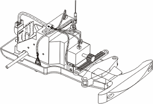

Make the rte1_car_assy_3 the displayed part.
(Window)
Make the harness the work part.
Use Place Part to add your new eyelet (or if you prefer, the rte1_cea_eyelet_2) to the harness subassembly in the same place and orientation as the old one. Use the PORT reference set and lock the engagement and rotation.
In the Electrical Component Navigator, assign the new eyelet.
(Auto Assign should work).
In the Electrical Connection Navigator, select all of the wires, and then right-click one and choose Unroute.
Heal a new spline path from the port of the wire clip to the new eyelet, using a start and an end Extension of 5.
In the Electrical Connection Navigator, Auto Route all of the wires at the pin level.
If you are working on your saved version of the assembly, save it.

Close the assembly.